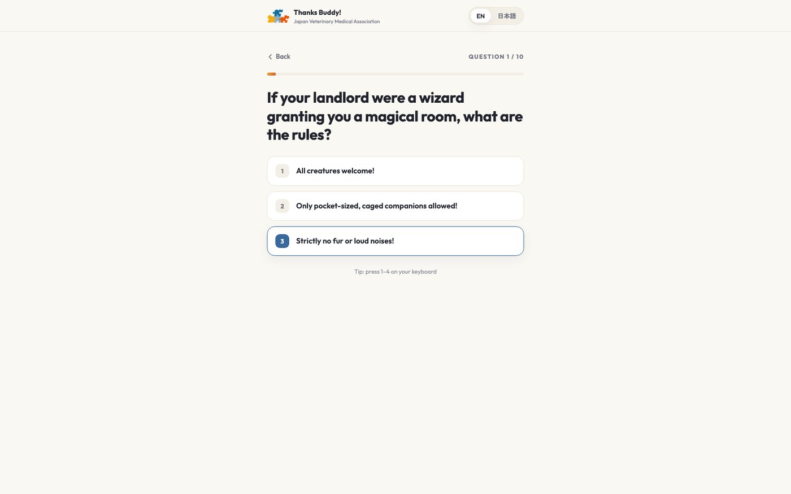
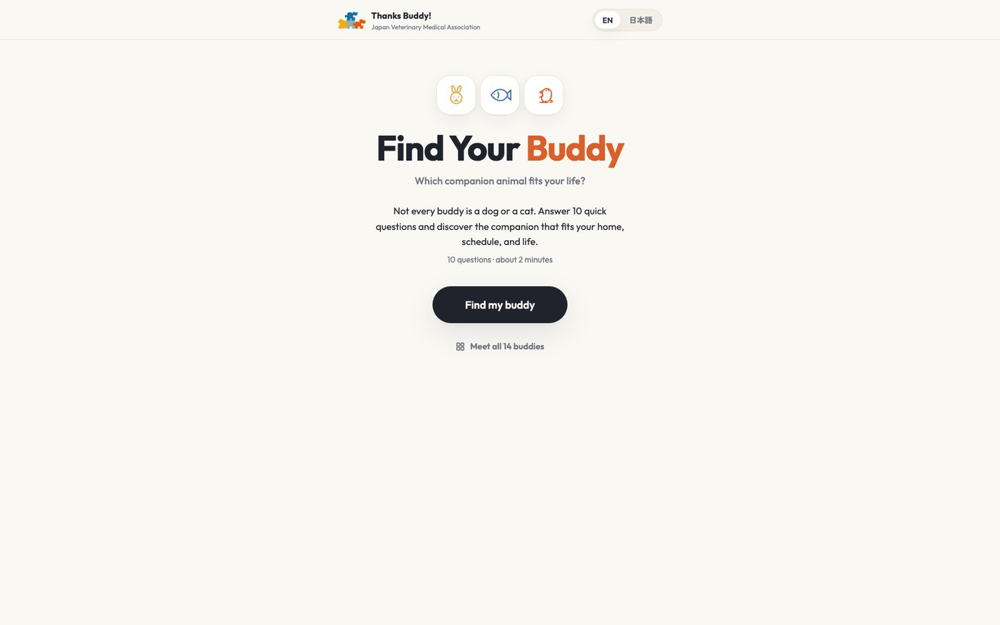
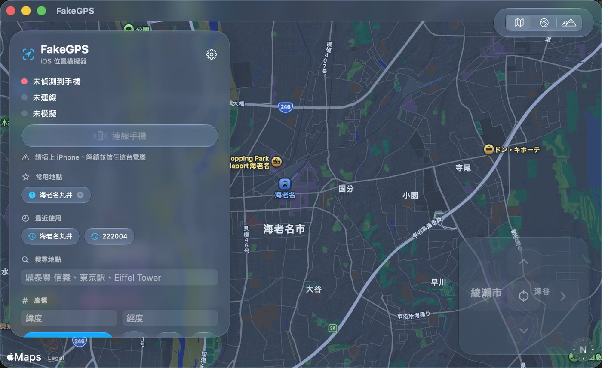

以下四項皆為獨立完成，無他人參與。
10 題問答推薦適合的同伴動物，共 14 種結果。支援中英日三語，作答完成後生成可分享至社群的圖卡。
投入最多的並非題目設計，而是配對百分比的校準：初版結果多集中在 60% 附近，缺乏鑑別度；調整權重後，典型結果落在具說服力的區間。


為青年活動製作的單頁互動網站，包含 8 道面試情境與作答回饋。免費、免登入、約三分鐘完成，這三項資訊置於按鈕下方，因報名轉換的主要流失點在此。
以 Mac 設定 iPhone 的 GPS 位置，用於測試依賴定位的 App。原生 SwiftUI + MapKit，支援 Apple Maps 搜尋、點選地圖設定與常用地點書籤。
除了設定單一座標，另支援沿真實道路以步行、單車或開車的速度移動：導航與健身類 App 要驗證的是移動過程，停在一個定點測不出來。
取捨主要放在安裝與日常使用的阻力上。權限改為安裝時設定一次，之後每次啟動不再要求密碼；安裝腳本一併處理相依套件與權限，使用者不需要安裝 Xcode。開發機本身未裝完整 Xcode，因此以命令列 swiftc 編譯並自行組裝 app bundle。原始碼以 MIT 授權公開，含安裝腳本與跨平台網頁版。

監控數個購物網站的商品供貨狀態。要判斷的不是怎麼抓資料，而是什麼時候該通知：僅於「缺貨轉為有貨」的狀態轉換時發送單次通知，狀態保存於本機，避免同一件事重複提醒導致訊息被忽略。
三個站點各自採用不同的擷取方式，其中一站具反爬蟲偵測，擷取方式另行處理。